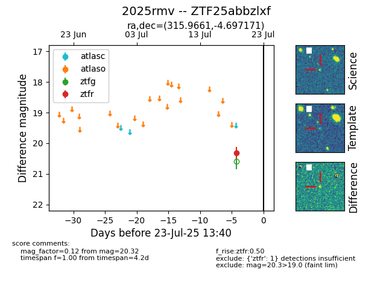

Target ZTF25abbzlxf at 2025-07-23 13:40, see:
FINK: fink-portal.org/ZTF25abbzlxf
Lasair: lasair-ztf.lsst.ac.uk/objects/ZTF25abbzlxf
ALeRCE: alerce.online/object/ZTF25abbzlxf
TNS: wis-tns.org/object/2025rmv
YSE: ziggy.ucolick.org/yse/transient_detail/2025rmv
alt names
ZTF25abbzlxf (ztf,fink)
2025rmv (tns,yse)
coordinates:
equatorial (ra, dec) = (315.9661,-4.69717)
galactic (l, b) = (44.7933,-31.45424)
photometry
last ztfr=20.32
1 ztfr detections
